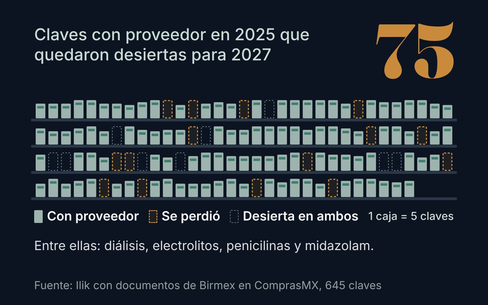

Quién ganó, quién perdió y qué falta en la compra de medicamentos 2027-2028 del gobierno: el posible impacto en el mercado privado
El gobierno cambió las reglas para comprar medicamentos 2027-2028. Quién ganó, quién perdió, qué quedó sin proveedor y qué puede significar para los hospitales privados.
28 de octubre de 2026, 13 min de lecturaLeer investigación